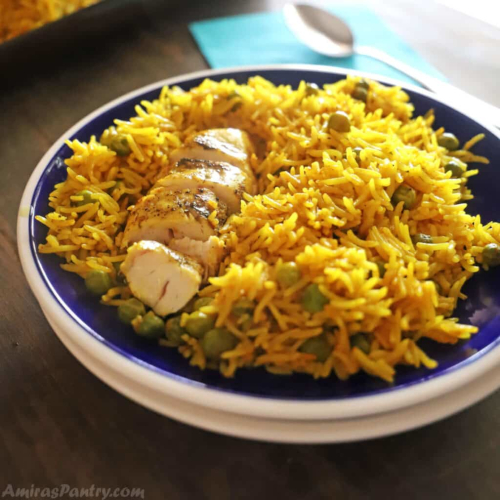

Chicken and Yellow Rice

Fragrant turmeric and saffron rice cooked with chicken and some peas to add texture and color, and all in one pot for more flavor and less cleanup. The perfect one-pot chicken meal.
Chicken with yellow rice also known as Arroz con Pollo is a classic recipe from Spain and Latin America. This is my Arabic version of the recipe inspired by my mom. We love anything and everything yellow rice and this one is a complete meal by itself. Have some salad on the side and dinner is served.
Ingredients
- A pinch of saffron threads.
- 1/4 cup hot water.
- 4 Tablespoons olive oil divided.
- 1 pound Chicken tenders. About 6 pieces.
- Salt and pepper.
- 1 onion (200g) , diced.
- 2 garlic cloves minced.
- 1 1/2 cups (300g) basmati rice.
- 1 1/2 teaspoon turmeric powder.
- 1 teaspoon salt or to taste.
- 1/2 teaspoon paprika.
- 1 cup 130g frozen peas.
- 1 1/2 cups chicken broth.
- 1 cup boiling water.
Instructions
- In a small bowl, soak saffron threads in 1/4 boiling water.
- Sprinkle some salt and black pepper to season chicken on both sides.
- In a pot over medium-high heat, pour two tablespoons of olive oil and heat.
- Add chicken tenders and lightly brown on both sides. Remove and set aside.
- In the same pot add remaining oil sauté onions for 2 minutes.
- Add garlic and sauté for another 30 seconds.
- Turn heat off and remove the pot from heat.
- Preheat your oven to 350F.
- If your pot can go to the oven continue with the recipe in the pot otherwise empty pot into a baking dish.
- Add rice, turmeric, paprika, salt and the saffron with its water.
- Mix them all well.
- Mix in frozen peas and return chicken to the pot.
- Pour in chicken broth and boiling water. With a spoon try to mix everything so the chicken is covered with the cooking liquids.
- Cover and bake in the middle rack of your oven for 30-40 minutes.
- Let it rest for 10 minutes then fluff with a rubber spatula.